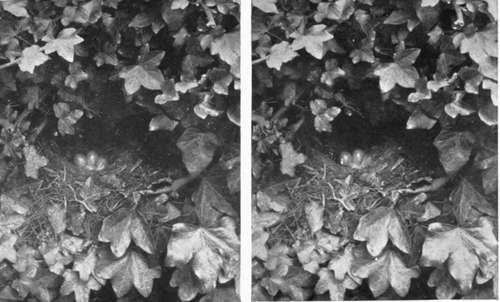
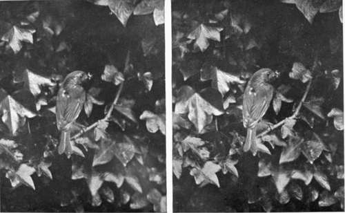
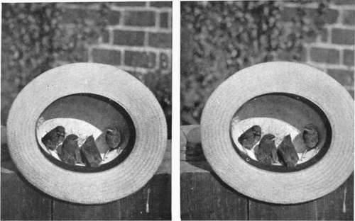
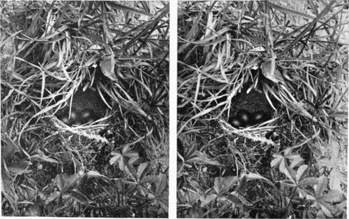

Chapter VII. A Few Hints On Stereoscopic Nature Photography
Description
This section is from the book "Nature Photography For Beginners", by E. J. Bedford. Also available from Amazon: Nature Photography for Beginners.
Chapter VII. A Few Hints On Stereoscopic Nature Photography
The astonishment generally expressed by any one looking at a good stereoscopic photograph for the first time is very striking. The sense of reality, and of being able, apparently, to see the third dimension, appeals to all, and I think quite supports the view already expressed, that a good stereoscopic Nature Photograph is the next best thing to Nature herself.
Robert Hunt, a very able early writer on Photography, makes use of the following words in connection with the subject in one of his books: " The magic result of the revolution of two plain pictures into one, possessing to the eye the most positive solidity, is so striking when witnessed for the first time, that it appears to be a deception of the senses. Even when fully accustomed to the phenomena of the stereoscope, there is so indescribable a charm in the beautiful pictures that they are gazed at again and again with increasing admiration. Living forms appear to stand out in all the roundness of life, and it is not possible to conceive a more perfect realisation of the human form than that which stands forth prominently from the background of the stereoscopic picture. In the stereoscope we have at once an instrument which enables us to study many of the phenomena of vision, and to reproduce loved and beautiful objects, or interesting scenes, through the agency of those rays by which they were illuminated, in that strange perfection which, in its mimicry of visible external nature, almost baffles the examination of human sense".
Fig. 26. Robins Nest.
Fig. 27. Robin going to Nest with Food for Young.
The stereoscope was at the height of its popularity from the time of the Great Exhibition of 1851 until the International Exhibition of 1862. Before the close of the former a. stereoscope and set of slides was presented to the then young" Queen Victoria by Sir David Brewster. One professional writer at the time of the latter exhibition has said that of two favourite subjects he had, more than a hundred negatives of each were continually printing, and hundreds of thousands of prints of various subjects were sold. After this a decline in popularity took place, and it is difficult to say exactly why. Perhaps one reason was that a thing which becomes such a craze is likely to—and often does—kill itself prematurely. Other reasons were, perhaps, the careless manner in which many of the slides were mounted, and also the vulgar character of many of the examples placed upon the market. There have been signs of a revival during the last few years, and I feel certain that those photographers who take up the study of it, and who use the ordinary care required to produce good results, will never regret it.
While the best form of stereograph, as the two dissimilar prints mounted on the one card are called, is undoubtedly a. good glossy photographic print itself, yet I hope the reproductions given in this book may show how suitable this class of work is for Nature Photography. Assuming that some of my readers will desire to take up this branch, I intend to devote this chapter to the consideration of the best means of setting about it.
There are ways of obtaining a true stereoscopic effect by means of only one lens, either by shifting the camera for the two exposures required when only one lens is used, or by an ingenious patented mirror arrangement to fit on the lens, but as the former method will only do in the case of stationary objects, and the latter, although I believe quite satisfactory in practice, is, after all, only a makeshift, I shall dismiss the consideration of both these methods, and deal only with the system which employs a pair of lenses. Personally I have several objections to using the standard size of stereoscopic camera which takes a plate 6 4/3 x 3 1/4 inches. It is an awkward shape for any other work, and the plates being in very little demand, compared with other sizes equally suitable, are less likely to be fresh when purchased.
I have already stated that my own preference is for the 1/2-plate or the post card size camera for the purpose, and on account of the weight of the former I have now adopted the latter. This size, therefore, which measures 5 1/2x3 1/2 inches, is the one I recommend if a new camera is being purchased. It is a very good shape for landscape or general work, and will give from the one negative two trimmed stereo-prints full 3x2 1/2 inches, which are quite large enough for practical work. Lantern slides by contact are also easily made from this size to include the whole of the picture.
Any camera used for stereoscopic work must have a septum or division arranged down the centre of the bellows inside. This is generally made of stiff folded cloth with elastic running through it in order to keep it taut, when in position, during any extension of the camera. It should be fitted so that when one picture the full size of the plate is required it may easily be removed. Its object is, of course, to allow each of the two lenses employed to see its own half of the plate only. If the camera is of the long focus pattern, as it should be, the septum ought to be so constructed that it will allow for either long or short focus work. If a good piece of elastic is employed, the same septum will easily accommodate itself to a difference of focus between the limits of from five to about twelve inches. The one I use does this, but another plan would be to have two separate ones for short and long focus work respectively, although this method would necessitate changing the septum, which is certainly not advisable for several reasons. When two lenses are used for stereoscopic work they must be " paired," that is, each must not only be of exactly the same focus and have the same sized stops, but must each give the same sized image. An extra charge of from five to ten shillings is generally made by the lens maker for doing this, and it is very necessary, for exact work, to have it done.
Fig. 28. Young Robins.
Fig. 29. Meadow Pipits Nest.
Continue to:
- prev: Chapter VI. On The Choice Of Subjects
- Table of Contents
- next: A Few Hints On Stereoscopic Nature Photography. Part 2
Tags
nature, photography, art, birds, camera